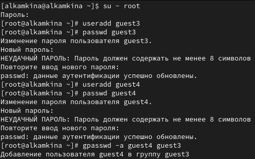

- Камкина Арина Леонидовна
- студентка группы НКНбд-01-21
- Российский университет дружбы народов
- 1032216456@pfur.ru
- https://alkamkina.github.io/ru/

Цель работы:
Получение практических навыков работы в консоли с атрибутами файлов для групп пользователей.
Задачи:
Инструмент: VirtualBox - CentOS, cmd
 { #fig:001 width=70% }
 { #fig:002 width=70% }
{ #fig:002 width=70% }
 { #fig:003 width=70% }
{ #fig:003 width=70% }
 { #fig:004 width=70% }
{ #fig:004 width=70% }
 { #fig:005 width=70% }
{ #fig:005 width=70% }
 { #fig:006 width=70% }
{ #fig:006 width=70% }
 { #fig:007 width=70% }
{ #fig:007 width=70% }
| Операция | Минимальные права на директорию | Минимальные права на файл |
|---|---|---|
| Создание файла | d(030) | (000) |
| Удаление файла | d(030) | (000) |
| Чтение файла | d(010) | (040) |
| Запись в файл | d(010) | (020) |
| Переименование файла | d(030) | (000) |
| Создание поддиректории | d(030) | (000) |
| Удаление поддиректории | d(030) | (000) |
В ходе выполнения работы приобрела практические навыки работы в консоли с атрибутами файлов для групп пользователей.